| 日付 | 2015年2月11日（水） |
|---|---|
| 山域 | 奥武蔵 |
| メンバー | 家族（妻、長女・3歳、長男・1歳） |
| 山行形態 | 子連れ日帰り |
| アクセス | 車 |
| ルート (Map) | ロープウェイ駐車場 (9:01) - (9:07) 宝登山神社 - (10:18) ロープウェイ山頂駅 - (10:36) 宝登山 (11:34) - (12:28) 氷池分岐 (12:44) - (13:10) 車道 - (13:41) ロープウェイ駐車場 |
宝登山は埼玉県にある山で、山頂一帯にはロウバイ園がある。
前から行こうと考えていた山で、蝋梅の最盛期である2月を待って宝登山に向かう。
宝登山ロープウェイの大駐車場に到着。標高200m。料金は500円だ。
下の方にある宝登山神社の駐車場は無料のようだが、参拝者が一時的に停められるだけのようだ。
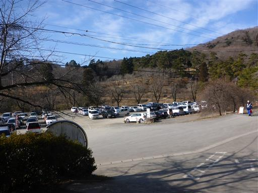
登山口が分からず少しうろうろする。
まずは宝登山神社に参拝する。
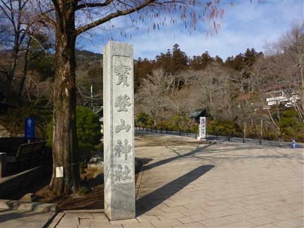
大きな鳥居。秩父三社の一社で、なかなか立派な神社だ。
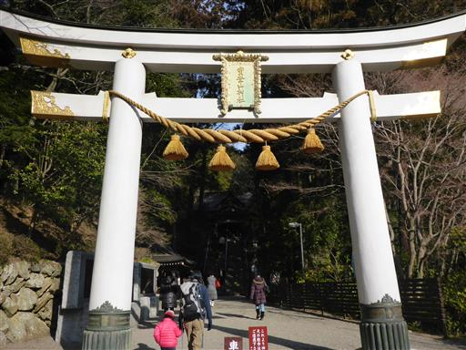
拝殿。細かい装飾が施されている。
今日は建国奉祝祭が催されていて、境内は賑わっている。
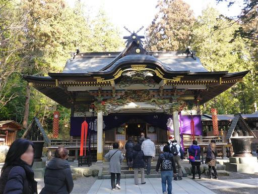
神社の裏から登山道に入っていくが、ロープウェイの駐車場とも繋がっているようだ。
駐車場にも標識が欲しかった。大木の根が露出していて、こちらに倒れてきそうだ。
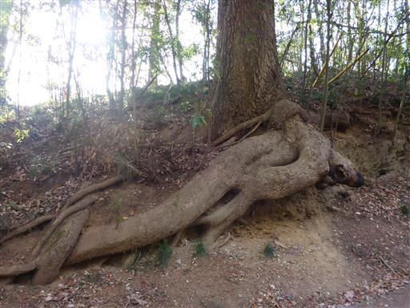
登山道というより車道のような道だ。何と悪路を車が下ってくる。
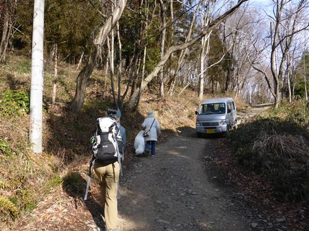
山頂までずっと車道のような道が続く。
ほとんどの人がロープウェイに乗ると思っていたが、意外に人通りが多い。
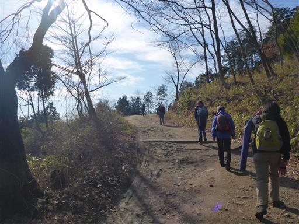
所々で展望が開ける。目の前に広がるのは奥武蔵の丘陵地帯だ。
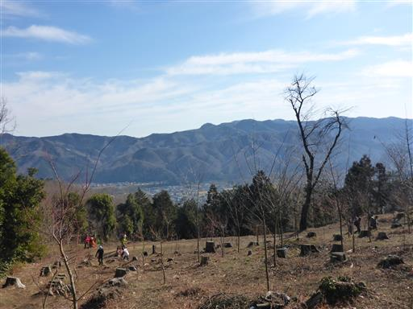
東屋でおむつ交換。息子は最近下痢気味だ。
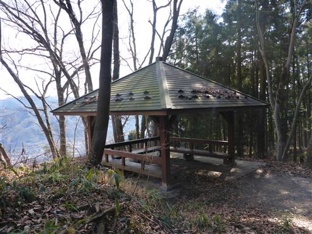
ロープウェイ山頂駅に到着する。
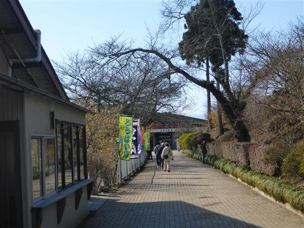
ここから先はロウバイ園だ。
ロープウェイで上まで来た人が大勢いるため、園内は混雑している。
ロープウェイは現在2時間待ちという声も聞こえてくる。それなら歩いたほうが早そうだ。
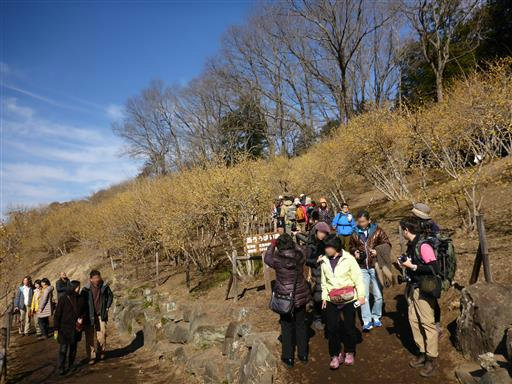
蝋梅がたくさん咲いている。花はほのかな香りがする。
梅という名前は付いているが、梅の一種ではないらしい。

ここでは3種類の蝋梅が植えられている。
こちらの花は蝋梅の原種だ。
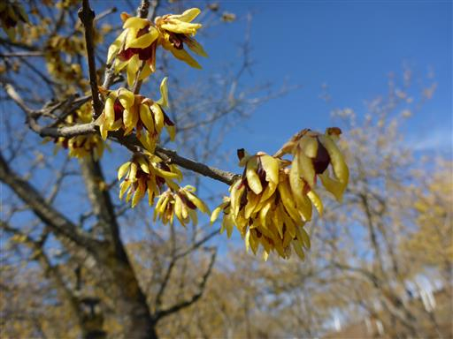
足元にはフクジュソウの花が咲いている。
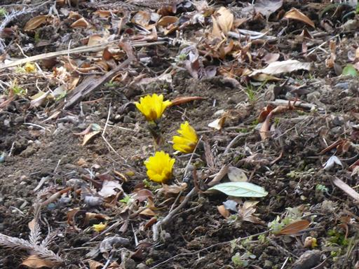
蝋梅も素晴らしいが、展望もなかなか素晴らしい。
秩父の町の向こうに聳えるのは武甲山だ。
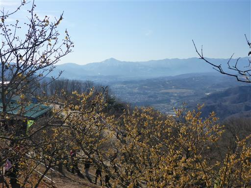
特異な山容の両神山も良く目立っている。
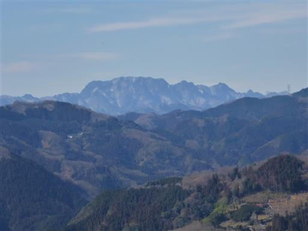
咲き誇る蝋梅を見学しながら山頂を目指す。
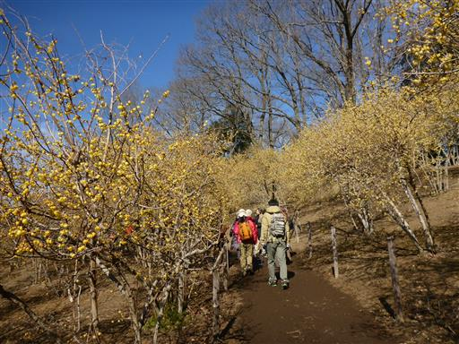
宝登山の山頂に到着する。標高497m。
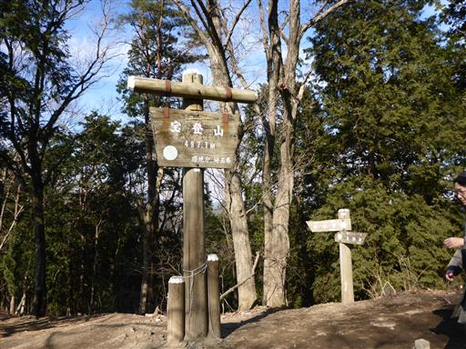
混雑する山頂の一角にシートを広げて昼食をとる。
親切な観光ガイドの方に山座同定の紙をもらう。
この間登った酉谷山の他、雲取山、和名倉山、甲武信ヶ岳などが同定できる。
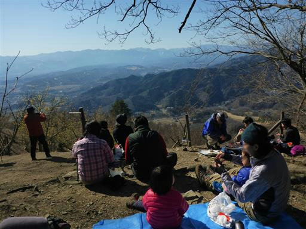
娘と息子は手をつないで歩いている。
娘はようやく姉らしくなってきた。
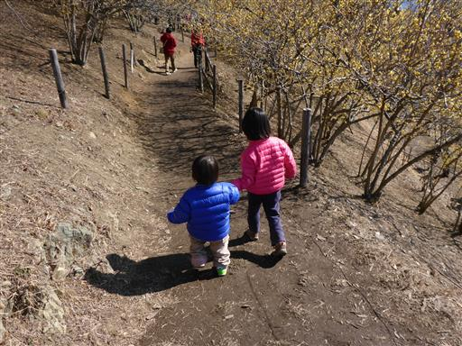
山頂部にある宝登山神社の奥宮に立ち寄る。
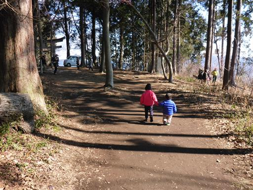
神社前には長い行列ができている。どこもかしこも人が多い。
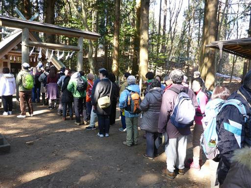
この神社の狛犬は狼だ。秩父の神社は狼の狛犬が多い。
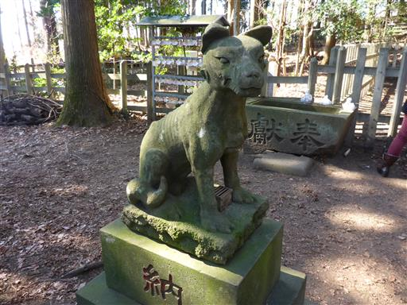
行列に並ぶ気もしないので、横から手を合わせておく。
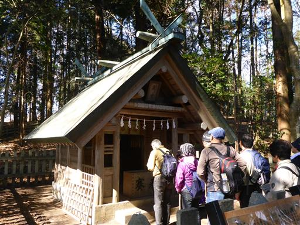
神社の前には謎の「やきみかん」なるものが売られている。おいしいのだろうか？
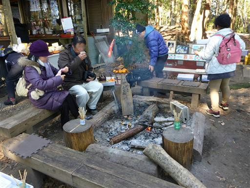
道の脇に、木のくずを集めて作られた壁がある。
杭とロープより手間がかかるように思うのだが…
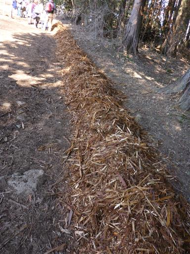
帰りは別コースを下る。
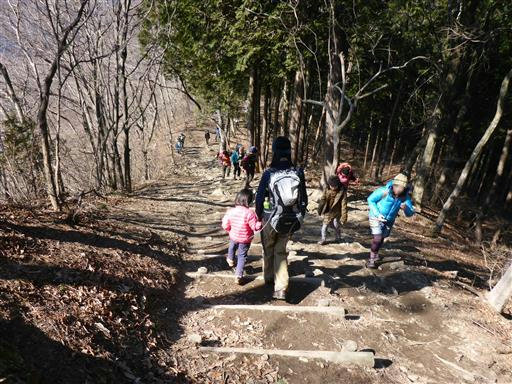
こちらの道に入るとパタッと人通りがなくなるかと思ったら、
意外や意外、続々と人が登ってくる。
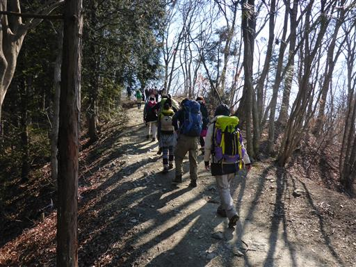
段差の大きい急な階段を下る。登ってくる人は皆苦しんでいる。
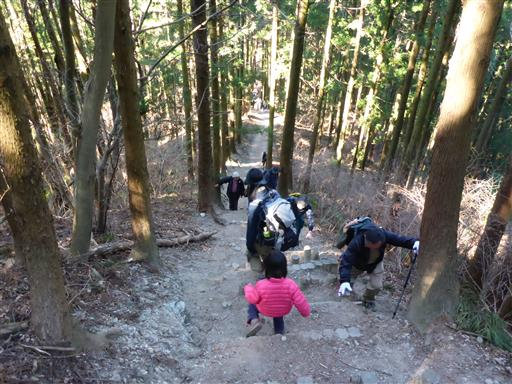
立派な林道に出てくる。
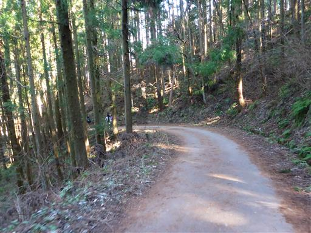
しばらく林道を歩くと再び登山道に入っていく。
この辺りは長瀞アルプスと呼ばれていて、人気のハイキングコースのようだ。
確かに落葉広葉樹が広がる森は、低山の割に雰囲気が良い。
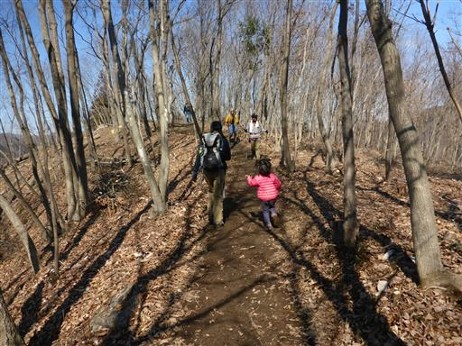
道は所々ぬかるんでいる。雪が解けたためだろう。
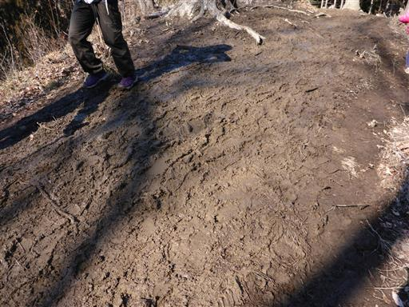
雰囲気の良い長瀞アルプスはまだ続くのだが、当初の予定通り氷池分岐から下山する。
ここでもう一度おむつ替えだ…
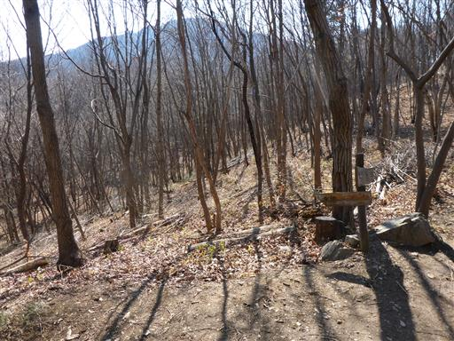
登山道はすぐに終わり、林道歩きになる。
娘はわざと氷の上を歩いて、滑ってこけている。
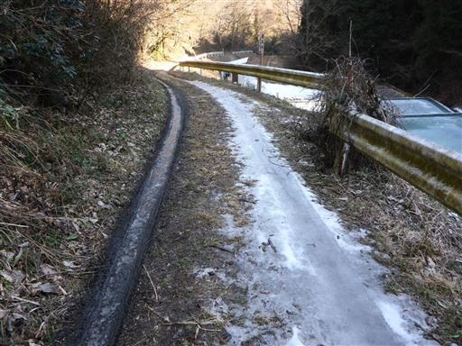
氷池とはどんな池かと思ったら、人工の池だった。
採氷中のため立入禁止の標識が立っている。採氷して何に使うのだろうか？
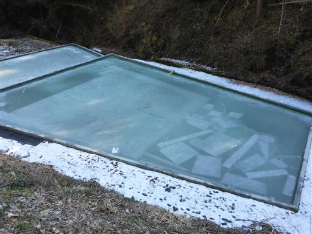
車道に下山する。道端に今年初めてのオオイヌノフグリを発見。
秩父は寒い地だが、着実に春は近づいている。
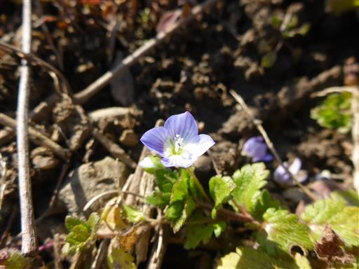
下山地点から駐車場まで、しばらく車道歩きだ。
驚いたことに、宝登山ロープウェイまで延々と車の列ができている。
駐車場の空き待ちのため、ほとんど車は流れていないが何時間待ちだろうか？
ちょっとしたハイキングには良いが、ここまで並ぶほどの場所ではなかろうと思うのだが…
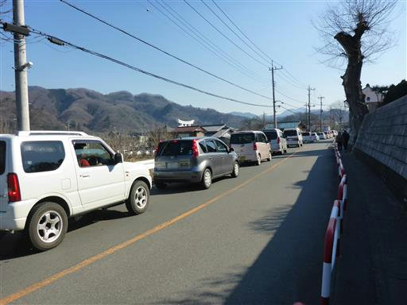
駐車場に到着。朝は空いていた駐車場はもう満杯だ。
混雑はしていたが、少し春を感じられる短いハイキングだった。
長瀞アルプスを端から歩けなかったのが少々心残りだ。
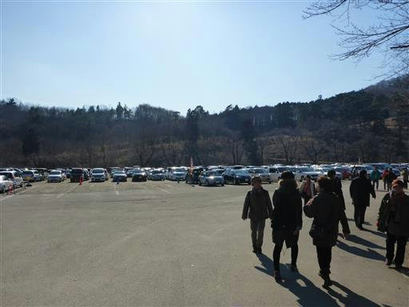